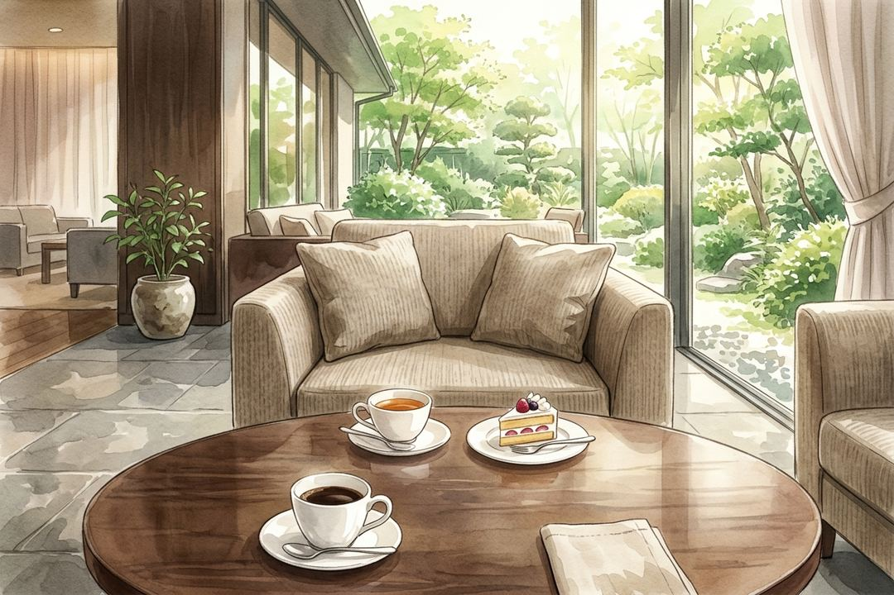

ホテルのラウンジで行われる1時間のお見合いを、男性の目線で体験します。会場への到着からお見送り、相談所へのお返事まで、全15場面を3択で進めます。
登場するお相手・会話はすべて練習用の架空のものです。毎回お相手と会話の話題が変わるので、何度でも練習できます。ルールは一般的な結婚相談所の例です。所属の相談所のルールも確認してください。
このページでは、利用状況を把握するために Google アナリティクスを使っています。名前などの個人情報は取得しません。